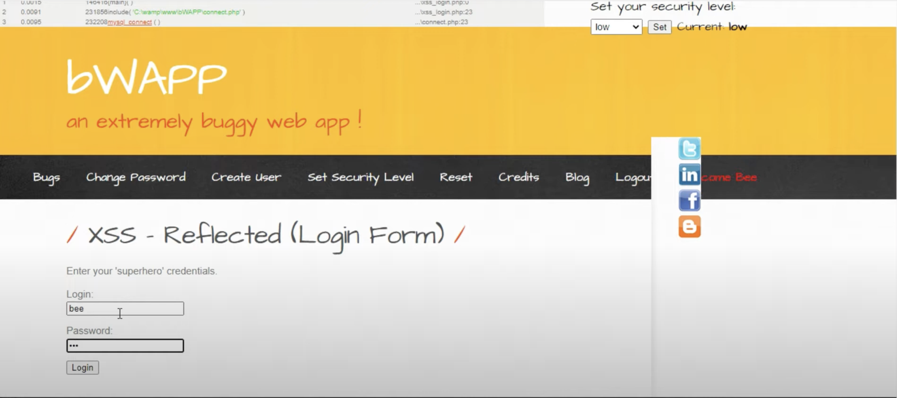
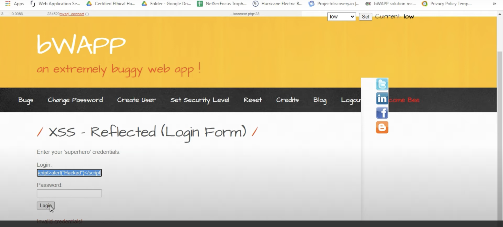
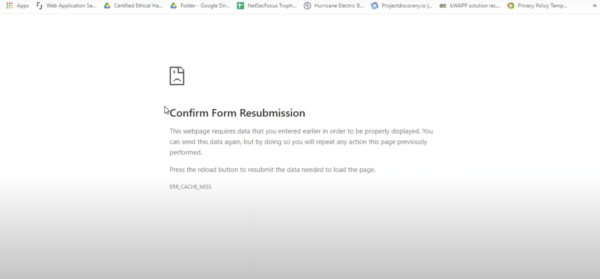
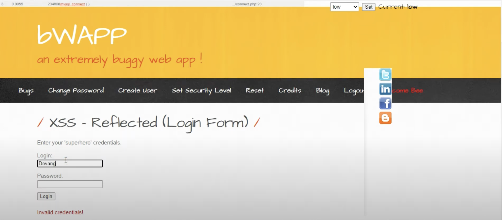
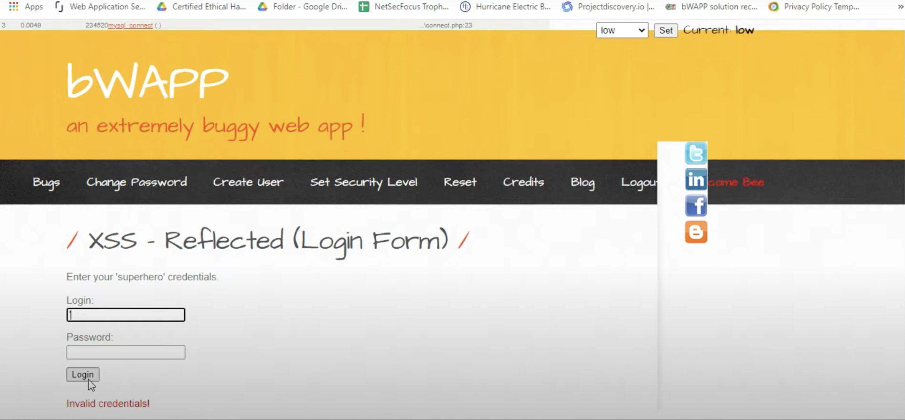
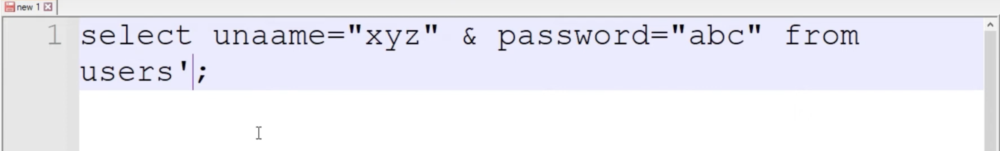
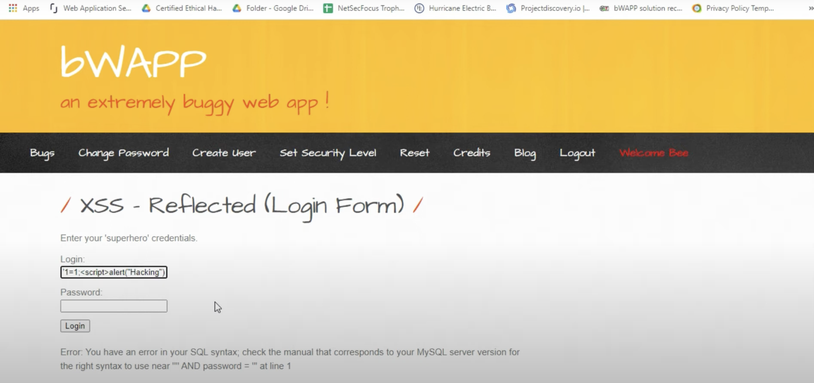

Tutorial on XSS Reflected (Login Form) in bWAPP
1. Setting Up the Environment
For this tutorial, you will need:
- bWAPP: a vulnerable web application for security practice.
- Google Chrome or another web browser.
2. Accessing bWAPP
Open bWAPP in a web browser:
URL: http://localhost/bWAPP/login.php
Log in with the default username and password.
bee and bug
Photo 1: Open bWAPP and navigate to the login page.
3. Navigating to the Vulnerability
Select the XSS - Reflected (Login Form) option from the list of vulnerabilities in bWAPP.
Photo 2: Select the XSS - Reflected (Login Form) vulnerability.
4. Understanding the Login Form
The login form expects a username and password. Invalid credentials will trigger an error message.
Photo 3: The login form for the XSS Reflected (Login Form) vulnerability.
5. Testing XSS
Enter a simple script into the login field to test for XSS vulnerabilities.
Example payload:
<script>alert('Hacked')</script>
Photo 4: Enter the XSS payload into the login field.
Photo 5: Submit the form to trigger the XSS payload.
6. Observing the Results
Notice how the script is executed and an alert box is displayed.
Photo 6: The XSS payload triggers an alert box.
7. Analyzing the Page Source
Right-click on the page and select "View Page Source" to analyze the code.
Photo 7: Viewing the page source to understand the vulnerability.
8. Understanding the Vulnerability
The XSS vulnerability exists because user input is reflected in the page without proper sanitization.
The eval() function in JavaScript, which is used to evaluate code represented as a string, can be exploited if not handled correctly.
Example: eval('alert("Hacked")')
Photo 8: Explanation of the eval() function in JavaScript.
Photo 9: Example of using the eval() function.
9. Confirming Form Resubmission
If you encounter the "Confirm Form Resubmission" error, it means the form data needs to be resent. This happens if you reload the page after a form submission.
Photo 10: Confirm Form Resubmission error message.
Photo 11: Click "Continue" to resubmit the form data.
10. Testing with Different Usernames
Enter various usernames and passwords to see how the application responds. For instance, using "admin" as the username and "password" as the password to check if the credentials are valid.
Photo 12: Testing with "admin" as the username and "password" as the password.
Photo 13: The application shows "Invalid credentials!" message.
11. Exploring SQL Injection
Try entering an SQL injection payload to see if the application is vulnerable. For example:
Payload:
' OR 1=1; --
Photo 14: Entering an SQL injection payload in the login field.
Photo 15: The application displays an SQL error message, indicating it is vulnerable.
12. Combining XSS and SQL Injection
Combine XSS and SQL injection techniques to perform more sophisticated attacks. For example:
Payload:
' OR 1=1; --<script>alert("Hacking")</script>
Photo 16: Entering a combined XSS and SQL injection payload.
Photo 17: The combined attack triggers an alert box and displays an SQL error message.
13. Using Encoded Payloads
Encode the XSS payload to avoid detection and bypass filters. For example:
Original payload:
'1=1;<script>alert("Hacked")</script>
Encoded payload:
%3Cscript%3Ealert%28%22Hacked%22%29%3C/script%3E
Photo 18: Entering an encoded XSS payload.
Photo 19: The encoded payload triggers an alert box.
Conclusion
Through this tutorial, you have learned how to identify and exploit an XSS Reflected (Login Form) vulnerability in bWAPP. You used simple scripts to test for vulnerabilities and analyzed the page source to understand the underlying issues.
It is crucial to practice such attacks in controlled environments to improve your security skills and better protect web applications against these vulnerabilities.